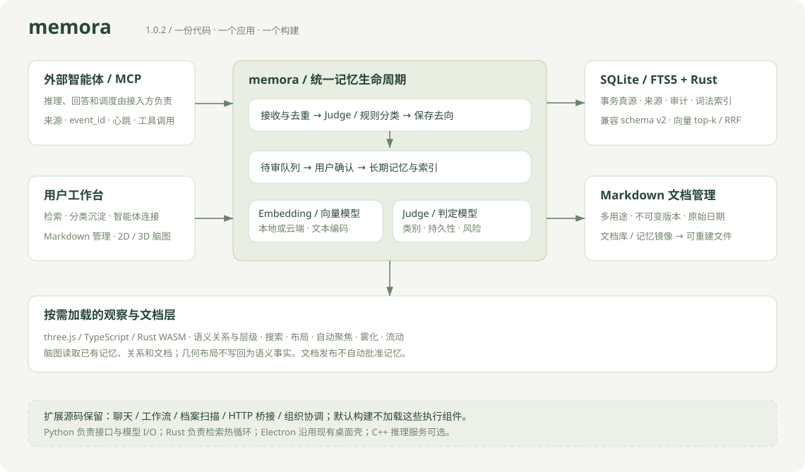

<!doctype html><html lang="zh-CN"><meta charset="utf-8"><meta name="viewport" content="width=device-width,initial-scale=1"><title>memora 1.0.2 架构预览</title><style>body{margin:0;padding:30px;background:#e9ede3;font:14px system-ui;color:#294336}main{max-width:1140px;margin:auto}img{width:100%;height:auto;border-radius:14px}p{line-height:1.9}a{color:#295c42}</style><main><h1>memora · 精简记忆架构</h1><p>主流程：接入 → 分类 → 确认沉淀 → 检索。Markdown 管理和二维 / 三维脑图继续保留；模型调度由接入的智能体完成。</p><p><a href="../README.zh-CN.md">项目说明</a> · <a href="REFACTOR-1.0.2.md">重构记录</a></p></main></html>
